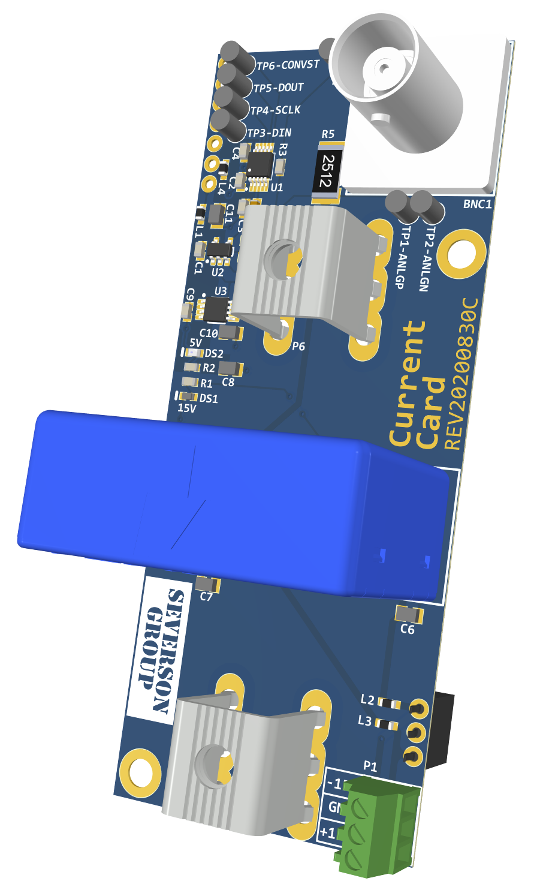
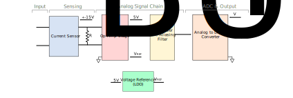

Current¶
This document describes the design considerations and implementation details for the current card. A block diagram is presented and each component is discussed in detail. Specifications of each component are provided based on the datasheet.
Relevant Hardware Versions¶
REV C
{kind=link}
Design Requirements and Considerations¶
The current measurement card was designed to the following specifications:
Current measurement range of +/- 55A (rms)
Noise immunity
Quick adjustment of the sensing range
High sensor bandwidth
SPI output to interface with the sensor motherboard
Block Diagram¶
The high level block diagram of the current sensor card is shown below:

Current Sensor¶
LEM LA 55-P current sensor is selected for this design, as it is the only sensor available from LEM with an open aperture and PC pins that can measure +/-55A. The open aperture was a requirement as it allows for the range to be easily scaled down just by adding turns to the primary. The LA 55-P is a closed loop compensated hall effect transducer that has an accuracy of +/-0.65% and linearity of <0.15% which is quite good compared to other sensors from LEM. It has an excellent bandwidth of 200khz and a low impedance current output that is inherently more immune to noise than a high impedance voltage output.
Burden Resistor (RBURDEN)¶
A burden resistor (R5) is used to convert the current output of the sensor to a voltage. For a sensing range of 70A, the burden resistance, RBURDEN was calculated using the following equation
VBURDEN = IPRIMARY(N2/N1)RBURDEN
RBURDEN = (10 V/70 A)*(1000/1) = 143Ω
The LA 55-P datasheet specifies the burden resistor value must be between 135Ω and 155Ω so a 150Ω resistor was selected.
Current Sensor Gain¶
The LA 55P has a conversion ratio of N1:N2 = 1:1000, where N1 is the primary turns (user configurable) and N2 is the secondary turns. With the chosen RBURDEN and N1 = 1, the current sense circuitry has a current - voltage gain of 1/7 [V/A]. To sense lower current, multiple number of primary turns can be added, without the need to modify any other parts of the circuit. As an example, to sense currents in the range of +/- 7 A, N1 = 10 can be used, without modifying rest of the circuit.
Op Amp Stage¶
The voltage across the burden resistor is a bipolar signal (voltage span includes both positive and negative voltages). A non-inverting level translation circuit is designed using Op Amps as shown here:

This circuit is used to translate the voltage across the burden resistor, which is bipolar, to the ADC input range of 0-4.5V. The resistor values can be calculated analytically. However, the algebra gets quite complicated. Hence it was computed using TI analog engineer’s calculator.
Note: As the op-amp output voltage approaches the supply rails, it tends to distort and behave nonlinearly so the output voltage is limited to actually be 0.2V to 4.5V
Voltage Reference (LDO)¶
The voltage reference, VREF is needed for the ADC. As 5V is readily available, and the LDO will have a minimum drop out voltage, VREF = 4.5V was chosen. The LDO selected was REF5045 from Texas Instruments, which can take a 5V input and provide a 4.5V reference output. This has an accuracy of 0.1% and low noise of 3μVpp/V.
First Order Anti-Aliasing Filter¶
A first order RC filter is implemented on the output of the op amp circuit. The cutoff frequency was set at 48kHz and the following equations was used for the computation:
fc = 1 / (2 π RC)
Note: The cutoff frequency can easily be changed by swapping out R3.
Analog to Digital Converter¶
A single-ended ADC was selected. The ADC used is the Texas Instruments ADS8860. It is pseudo-differential input, SPI output, SAR ADC.
The maximum data throughput for a single chip is 1 MSPS but decreases by a factor of N for N devices in the daisy-chain.
The input voltage range is 0-4.5V. The positive input pin of the ADC AINP is connected to the output of the low pass filter, and the negative input pin AINN is connected to GND.
Note: The different stages of the current sensor card described above convert the input current into a voltage in the range of 0.2V - 4.5V. Therefore, 0 input current corresponds to 2.35V at the ADC input. The positive peak corresponds to 4.5V and the negative peak corresponds to 0.2V.
Connectors¶
There are two screw terminals
P5andP6to connect the conductor in which the current is to be measuredA screw terminal block
P1is used to connect the +-15V supply for the current sensorA BNC terminal is available to directly measure the output across the burden resistor RBURDEN
Footprints¶
A user may want to change some of the passive components based on the range required and the RC filter cutoff frequency desired. The footprints of passive components that may need to be replaced i.e, the burden resistor (R5), the resistors in the Op Amp stage, and the RC filter components is provided here for quick reference. Note that these footprints are imperial codes and not metric codes.
Component |
Footprint |
|---|---|
R3 |
0603 |
R4 |
0603 |
R5 |
2512 |
R6 |
0603 |
R8 |
0603 |
C5 |
0603 |